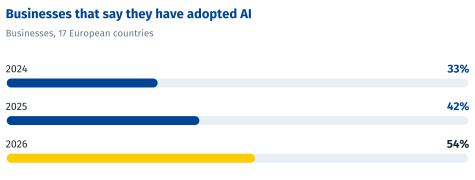
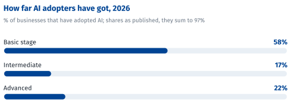
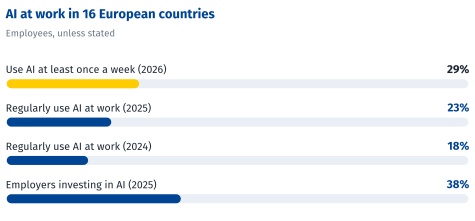
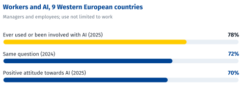
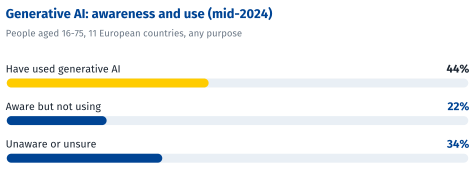
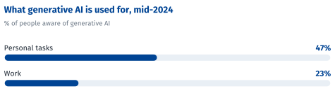
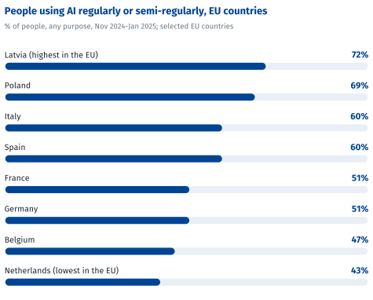
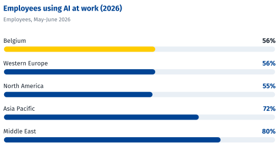
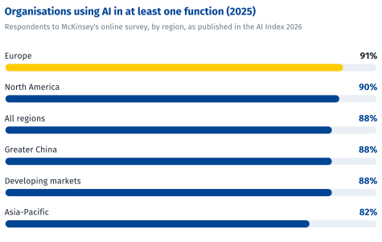
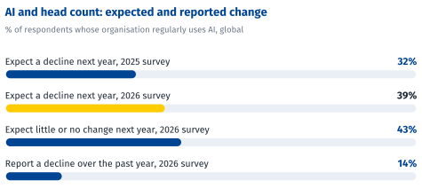

Company surveys
Surveys run or commissioned by private companies. Most use online panels and loose definitions of “using AI”, and publish little on method, so they are not plotted on the overview.
AWS / Strand Partners
Unlocking Europe’s AI Potential 2026 · Amazon Web Services, fieldwork by Strand Partners · published March 2026, fieldwork dates not stated · Firms, 17,000 business leaders in 17 European countries (14 in the EU). Asks whether the business has adopted AI; exact wording not published.


SD Worx
HR and Payroll Pulse 2026 · SD Worx, fieldwork by iVOX · 27 January to 20 February 2026 · Workers and firms, 16,500 employees and 5,936 HR decision-makers in 16 European countries (13 in the EU). Asks whether and how often employees use AI at work; exact wording not published.

EY
European AI Barometer 2025 · EY · March 2025 · Workers, 4,942 managers and employees in 9 Western European countries (8 in the EU). “Have you ever been involved with Artificial Intelligence (for example ChatGPT, Perplexity, Midjourney) or have you actively used it?”

Deloitte
Trust in generative AI: a European perspective · Deloitte · 28 June to 12 August 2024 · Individuals, 30,252 people aged 16 to 75 in 11 European countries (9 in the EU). “Have you ever used any generative AI tools, or not?”


KPMG / University of Melbourne
Trust, attitudes and use of artificial intelligence: a global study 2025 · University of Melbourne with KPMG · November 2024 to mid-January 2025 · Individuals, 48,340 people in 47 countries (22 in the EU), about 1,000 per country, online panels. “In your personal life (work/studies), how often do you intentionally use AI tools, including generative AI tools?” Regular or semi-regular use means at least every few months. In the Belgium snapshot, 59% of employees say they intentionally use AI at work.

PwC
Global Workforce Hopes and Fears Survey 2026 · PwC · May and June 2026 · Workers, 49,364 employees in 48 countries and regions, 1,041 in Belgium. Asks whether employees use AI at work; exact wording not published. Figures are from PwC Belgium’s press release.

McKinsey
The state of AI in 2026: On the road to ROI · McKinsey & Company · 4 May to 8 June 2026 · Organisations, as reported by 1,719 respondents at all levels in 97 countries answering an online survey about their organisation; 36% work for organisations with more than $1 billion in annual revenue; weighted by each country’s share of global GDP. Asks whether the organisation regularly uses AI in at least one business function; exact wording not published.
In 2026, 89% of respondents said their organisation regularly uses AI in at least one business function, against 88% in 2025 (Exhibit 1). Among organisations using AI, 44% are scaling it across the enterprise, up from 38%. The 2026 report gives no results by region. The Stanford AI Index 2026 publishes McKinsey’s 2025 results by region (Figure 4.3.2, p. 194): Europe 91%, up from 80% in 2024 and 57% in 2023, although before 2025 McKinsey asked about adoption rather than regular use. Respondents are not a representative sample of firms and any regular use in a single function counts, so the share is far above the 20% of EU enterprises with 10+ employees in Eurostat’s 2025 survey.


The 2026 survey asked respondents whose organisation regularly uses AI how AI changed total employment over the past year: 14% report a decline, less than half the 32% who expected one in the 2025 survey, and two-thirds report little or no change (Exhibit 16).